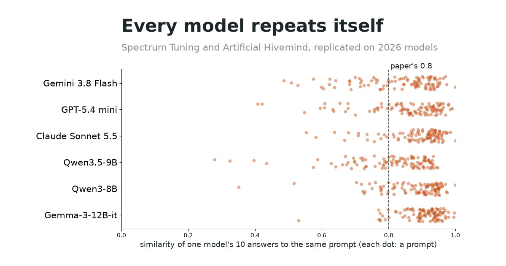
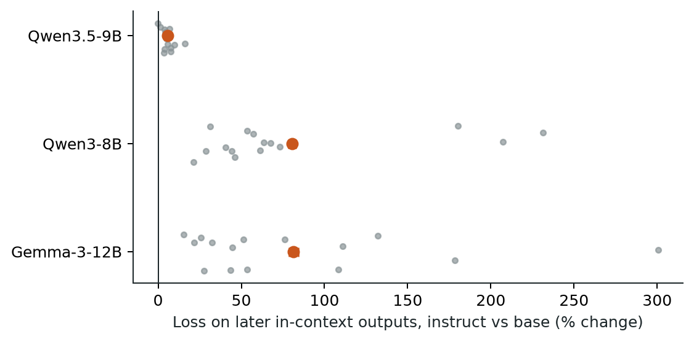
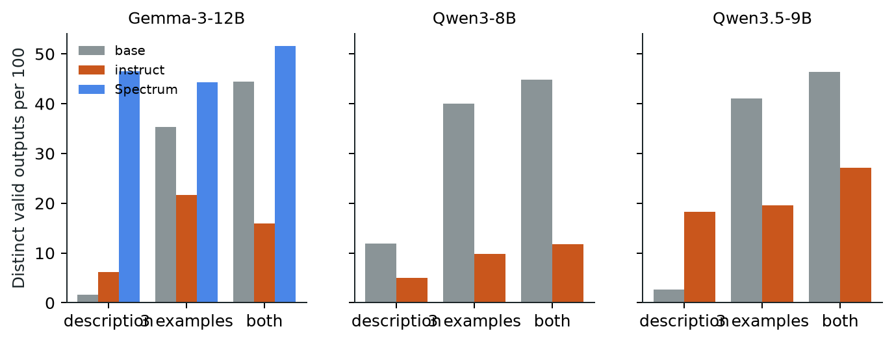
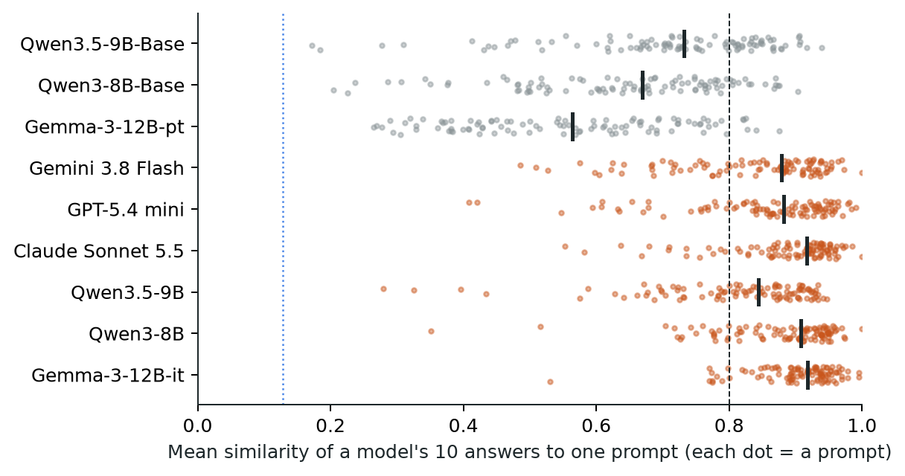
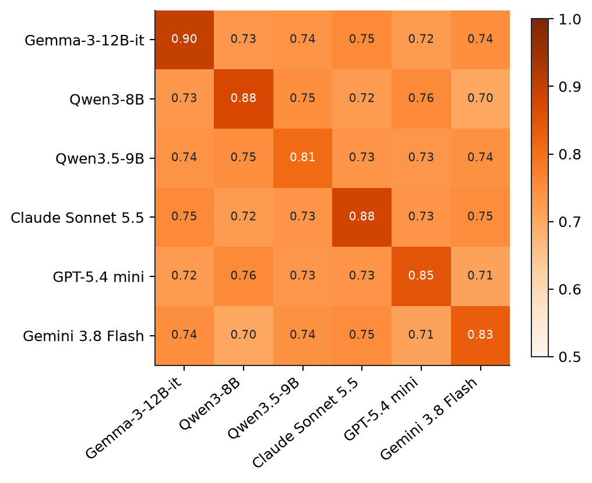
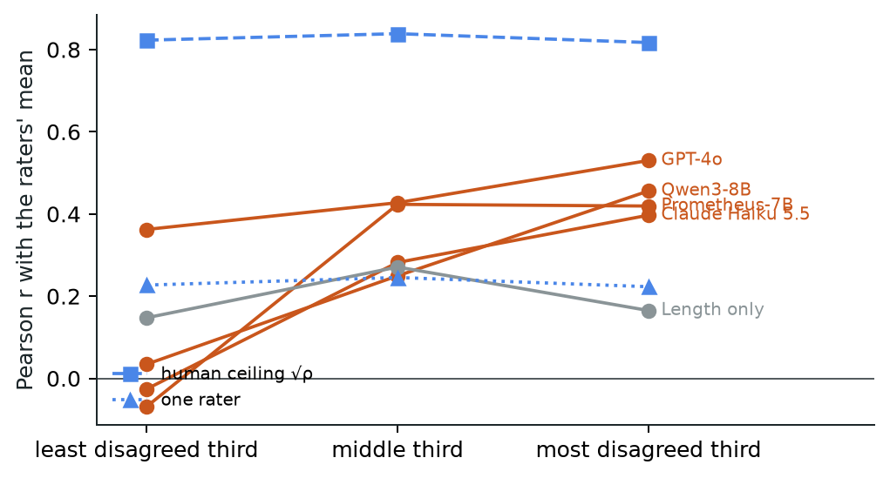

← Research·Experiments··Updated
Post-training still cuts steerability and variety
Two papers say post-training narrows what models can say and that LLM judges fail where people disagree. With the authors' code and data on seven open and three frontier 2026 models: post-training's costs to steerability and coverage hold in all three model families, every model repeats itself, different models converge only just past the paper's bar, and the judge claim reverses.

results/summary.json.Summary: the short answer and the key results
In short
Do the findings that post-training narrows models, and that judges fail where people disagree, hold on 2026 models?
Mostly. Spectrum Tuning: 2 of 2 replicated. Instruction-tuned models were more surprised than their base models by the next example of a distribution shown in context (loss +56% [+55%, +57%] across Gemma-3-12B, Qwen3-8B and Qwen3.5-9B), and produced fewer distinct valid outputs per 100 (14.8 fewer [12.2, 17.4]). Qwen3.5-9B's costs are much smaller (+6% loss, 8 fewer outputs) than the older two models' (+80%, 12-23 fewer). Artificial Hivemind: 2 of 3 replicated. All six instruct models repeat themselves (median similarity of 10 answers to one prompt 0.84-0.92, above the paper's 0.8), and answers from different models are 0.73 similar, just past the paper's 0.70 bar, and only when 53 empty replies are left out. The judge claim reverses: GPT-4o, Claude Haiku 5.5, Prometheus-7B and Qwen3-8B agree better with 25 human raters on the third of answers people disagreed about most (r 0.40 to 0.53) than on the third they agreed about (−0.07 to 0.36). The likely reason is that agreed-on answers are nearly all rated 4-5, which leaves little spread to correlate with; this is a possible reason, not a change of verdict.
Key results
Spectrum Tuning: 2 of 2 claims replicated
- A steerability: replicated
- B coverage: replicated
Artificial Hivemind: 2 of 3 claims replicated
- C repetition: replicated
- D convergence: replicated, fragile
- E judges and disagreement: not replicated (reversed)
| Claim (pre-registered test) | Result | Compared with |
|---|---|---|
| A. Post-training hurts in-context steerability (instruct vs base loss on later in-context outputs) | +56% [+55%, +57%] pooled; Gemma-3-12B +81%, Qwen3-8B +80%, Qwen3.5-9B +6% [+5%, +7%]. Instruct worse on 42 of 45 family-task pairs, better on none | The paper: instruct loss higher in 117 of 144 free-text comparisons. Spectrum-tuned Gemma: +1.5% against its base |
| B. Post-training hurts coverage (distinct valid outputs per 100, base minus instruct) | 14.8 fewer [12.2, 17.4]; Gemma 12.5, Qwen3 23.4, Qwen3.5 8.4 fewer. Instruct validity 0.85-0.96 against base 0.45-0.55 | Spectrum-tuned Gemma: 47.4 distinct valid, against 27.1 base and 14.6 instruct |
| C. Each model repeats itself (median similarity of 10 answers to one prompt, above 0.8) | 6 of 6 instruct models above 0.8: 0.84 (Qwen3.5-9B) to 0.92 (Gemma-3-12B-it) | Answers to different prompts: 0.14. Base models: 0.56-0.73 (instruct − base +0.10 to +0.34) |
| D. Different models converge (mean similarity across models, above 0.70) | 0.734 [0.708, 0.758]: past 0.70 by +0.008 at the low end. With 53 empty Claude replies scored 0, 0.722 [0.696, 0.747]: null | Within one model: 0.859. Cross-model similarity is 85% of a model's similarity to itself |
| E. Judges are least calibrated where raters disagree (judge-human r, least-disagreed third minus most) | −0.38 [−0.62, −0.09]: judges agree better on the disagreed third. Divided by the human ceiling: −0.46 [−0.76, −0.14] | Paper-style (all items vs top 16% by disagreement): +0.04 [−0.08, +0.16], null. Human ceiling falls from 0.92 to 0.73 there |
01Introduction
Asked a hundred times for a number between 1 and 10, Gemma-3-12B-it and Qwen3-8B answered "7" every time. Asked ten times to "Write a metaphor involving time", Gemma-3-12B-it, Qwen3-8B, GPT-5.4 mini and Claude Sonnet 5.5 each put a river in the first sentence of all ten answers, and Qwen3.5-9B in seven. These are small, concrete versions of a large worry: if the models people talk to all lean the same way, the range of answers people see narrows, and people whose view sits outside that range stop being served.
What is known. Two recent papers measured this. Spectrum Tuning (ICLR 2026) found that post-training (instruction tuning and preference training) makes models worse at in-context steerability, using examples in the prompt to shift toward a new distribution, and worse at coverage, producing many different valid outputs. The Artificial Hivemind paper (NeurIPS 2025) built Infinity-Chat, a set of real open-ended prompts with 25 human ratings per answer, and reported three things: each model repeats itself, different models converge on the same answers, and LLM judges agree least with people exactly where people disagree with each other.
What is missing. Both papers tested 2024-2025 models. This series asks what judge-based post-training does to plurality (Episode 3 trains models against judges), so it first needs to know whether these five findings hold on the models it will train, measured with code it can reuse.
What this note does. It reruns all five claims on 2026 models with pre-registered pass rules, using the Spectrum authors' own evaluation code and the Hivemind paper's prompts, sampling settings, embedding model and judge prompt.
Do post-training's costs to steerability and coverage, and the Artificial Hivemind's repetition, convergence and judge miscalibration, hold on 2026 models?
Contributions:
- A pre-registered verdict on each of the five claims, with 95% intervals.
- A control the original judge analysis lacks: a split-half human ceiling inside each disagreement bin, which separates "judges are worse here" from "everyone is worse here".
- A reusable measurement module (
measures.py) and runner for the authors' Spectrum code, which Episode 3 uses on its trained checkpoints.
02Setup
2.1 The five measures, in plain words
- Steerability (claim A). A prompt shows a model a few outputs drawn from some distribution (one person's survey answers, a set of chemistry values, a user's chatbot preferences), then asks for another. The loss is how surprised the model is by the real next output, in nats; lower means the model used the examples well. The measure is the mean loss on every output after the first (the paper's
loss_geq_1), on the 15 fetchable tasks of the Spectrum Suite test set. - Coverage (claim B). Ask for 100 outputs of a task with many valid answers (a US state, a prime, a car model, an email address) and count the distinct valid ones. This count is the yield; validity is the share that pass the task's checker; diversity is distinct valid over valid.
- Repetition (claim C). Ten samples from one model on one prompt are embedded (OpenAI's text-embedding-3-small, the paper's choice); repetition is their mean pairwise cosine similarity. For scale: two paraphrases of one sentence scored 0.71-0.90 in our check, unrelated sentences 0.02-0.19.
- Homogeneity (claim D). The same similarity, between one model's samples and another model's samples on the same prompt.
- Judge calibration (claim E). Pearson correlation between a judge's 1-5 score and the mean of the 23-26 human ratings of the same answer, inside groups of answers that people agreed or disagreed about (by the entropy of their ratings).
2.2 Models and data
| Claim | Models | Items |
|---|---|---|
| A, B | Three families, base (PT) against instruct (IT): Gemma-3-12B, Qwen3-8B, Qwen3.5-9B. Spectrum-tuned Gemma-3-12B (v1) as a reference row | A: 15 Spectrum Suite test tasks, up to 300 instances each. B: 22 checkable generation tasks × 3 prompt settings × 2 seeds × 100 samples |
| C, D | Six instruct models: Gemma-3-12B-it, Qwen3-8B, Qwen3.5-9B (thinking off), Claude Sonnet 5.5, GPT-5.4 mini, Gemini 3.8 Flash. Base models as a reference for C | Infinity-Chat100 (100 prompts) × 10 samples, top-p 0.9, temperature 1, up to 512 tokens |
| E | GPT-4o (the paper's judge), Claude Haiku 5.5, Prometheus-7B v2 (the paper's open judge), Qwen3-8B | 750 answers (50 prompts × 15) with 23-26 human ratings each, from Infinity-Chat |
What counts as success, fixed before any run:
- Each claim passes only if the 95% bootstrap interval of its statistic lies on the paper's side of zero (over tasks or prompts, and samples or seeds where outputs are sampled).
- Every effect is read against a control: base models for A, B and C; the similarity of answers to different prompts for C and D; a length-only "judge", one human rater and the split-half human ceiling for E.
- Every scorer is checked on known answers first (embeddings on paraphrases, judges on broken replies, coverage checkers on the authors' own tests).
03How the study was run
- Plan written and committed before any confirmatory run: claims, statistics, pass rules and four predictions (section 7).
- Data fetched. Every Spectrum test task except
wvs_individual, whose World Values Survey microdata needs a registration form with personal details; it is left out and named here. - Known-answer checks. Embeddings: 10 paraphrase pairs and 10 unrelated pairs. Judges: 10 rated answers against an off-topic or truncated copy (GPT-4o ranked the broken copy lower 10 of 10 times, Claude Haiku 5.5 9 of 10).
- Pilot (discarded): 2-4 tasks × 30 instances; 3 coverage tasks × 20 samples; 5 prompts × 4 samples; 20 judged items. It found five bugs, all fixed before the full run (listed in the second table).
- Full run on Modal (A100 and H100 GPUs) and OpenRouter: 26,013 steerability instances, 92,400 coverage samples, 9,000 Hivemind samples, 3,000 judge scores.
- Analysis by
analyse.py, verdicts computed mechanically from the pre-registered rules.
| Fixed before any trial | Changed after reading pilot or run outputs |
|---|---|
| Claims, statistics, pass rules, predictions | Instances per task 500 → 300, by the pre-registered cost rule (the pilot projected about $80 of GPU time at 500) |
| Models, formats (base: plain "colon" prompt; instruct: chat template; Spectrum model: its own format), the 16 test tasks | The instruct-in-colon format control was cut to the 8 shortest tasks, for budget |
| Sampling: temperature 1 with top-k off and repetition penalty 1 for B; top-p 0.9, temperature 1 for C/D; judges greedy | Bugs found running the authors' code on 2026 libraries: float32 logits handed to their scorer (it calls numpy, which has no bfloat16); habermas_opinions registered (imported but never registered in the release); globaloqa's CSV fetched without fsspec. None changes a number the authors' code would compute |
| Embedding model, judge prompt (the paper's Figure 23), entropy thirds | Judge Claude Haiku 5.5: reasoning turned off and every item re-judged (with the API default, 182 of 750 replies spent their tokens thinking and returned no score). Prometheus and judge parser: scores read from prose as well as JSON |
Conditions: bfloat16 weights, one model per GPU, Hugging Face generate; frontier models through OpenRouter with reasoning off where the API allows. GPU time 7.9 (as billed at the H100 rate) hours; spend about $31 of Modal and $6.78 of OpenRouter, both under their caps.
04Results
4.1 Spectrum Tuning: both costs of post-training replicate, smaller in the newest model
- A steerability: replicated, +56%
- B coverage: replicated, 14.8 fewer per 100
In all three families the instruction-tuned model was more surprised than its base model by the next example of a distribution it had been shown, and produced fewer distinct valid outputs. Both pre-registered tests pass with intervals far from zero. The size of the cost differs by family: Gemma-3-12B and Qwen3-8B lose about 80% in loss, Qwen3.5-9B 6%. Before any new model was trusted, the authors' code reproduced their own Gemma-3-12B numbers to within 1-3% on most overlapping tasks (chatbot-arena replies: base loss 122 against their 125, instruct 258 against 259; the largest gap is the instruct model on flight preferences, 3.05 against 4.06).
Claim A in detail: steerability (replicated)
The statistic is the relative change in mean loss on in-context outputs after the first, instruct minus base over base, averaged over the 15 tasks, with a bootstrap over instances inside each task. Pooled over the three families it is +56% [+55%, +57%]: Gemma-3-12B +81% [+79%, +84%], Qwen3-8B +80% [+78%, +83%], Qwen3.5-9B +5.7% [+4.6%, +6.8%]. The instruct model was worse on every Gemma and Qwen3 task and on 12 of 15 Qwen3.5 tasks; the other three Qwen3.5 tasks are ties. Figure 1 shows every task.

Two boring explanations, tested.
- The chat format, not the training, makes the loss worse. Partly, for Qwen3-8B. On the 8 short tasks, given the base model's plain "colon" prompt, the Qwen3-8B instruct model was +23% worse than its base, against +106% in its chat template on the same tasks. Gemma-3-12B-it was +111% worse in chat and still +92% in colon; Qwen3.5-9B +7% and +9%. The paper chose each instruct model's best format; the authors' configuration names chat for both Gemma and Qwen, and so did our pre-registration. Read the Qwen3 cost as "post-training plus its chat format".
- Instruct models do not use the examples. Not so. The pre-registered secondary measure, how much the loss falls from the first output to later ones, shows instruct models gaining more from the examples than base models (by 0.28 of the base model's first-output loss [0.26, 0.31]). They start further off, often very sure of a wrong first answer, and the examples pull them back, but not all the way. So the measured cost is mostly a worse starting guess that context only partly fixes, not a failure to read context.
On the four categorical tasks, accuracy barely moved (for example Gemma on individual chatbot preferences 0.39 base, 0.40 instruct): the loss gap comes from confidence, which accuracy does not see. The Spectrum-tuned Gemma model matched its base model: mean loss change +1.5%, within ±5% on 12 of 15 tasks, which is what the paper reports for its fix.
Claim B in detail: coverage (replicated)
The statistic is the number of distinct valid outputs in 100 samples (the yield), base minus instruct, averaged over 22 tasks, 3 prompt settings and 2 seeds, with a bootstrap over tasks and then seeds. Pooled: 14.8 fewer per 100 [12.2, 17.4]; Gemma-3-12B 12.5 [8.6, 16.6], Qwen3-8B 23.4 [17.9, 29.1], Qwen3.5-9B 8.4 [5.0, 12.1].

The pattern is the paper's. Instruct models are valid most of the time (0.85 to 0.96) and say the same few things (only 10% to 27% of their valid outputs are distinct); base models are less often valid (0.45 to 0.55) but far more varied. Which wins depends on the prompt. Given only a description, base models are rarely valid (2% to 19%), and instruct models yield more for Gemma (6.2 against 1.6) and Qwen3.5 (18.3 against 2.7), though not for Qwen3 (5.0 against 11.8). Given three examples, base models yield 35 to 46 and instruct models 10 to 27. Spectrum-tuned Gemma yields 47.4 on average, more than either, at 0.85 validity.
One boring explanation was removed before the run: the models' own generation settings add a top-k cut-off of 20 to 64 to instruct models only, which would have favoured the claim. Every model sampled with top-k off.
4.2 Artificial Hivemind: models repeat themselves, converge just past the bar, and the judge claim reverses
- C repetition: replicated, 6 of 6 models
- D convergence: replicated, fragile
- E judges: not replicated, reversed
Every instruct model, open or frontier, gives ten answers to an open-ended prompt that are about as similar to each other as two paraphrases of one sentence (median 0.84-0.92). Different models' answers to the same prompt are less alike (0.73), past the paper's 0.70 only by a hair. And the four judges' scores track the human mean better, not worse, on the answers people disagreed about.
Claim C in detail: repetition (replicated)
For each of 100 Infinity-Chat prompts, each model wrote 10 answers (top-p 0.9, temperature 1), embedded with text-embedding-3-small. The paper says the mean pairwise similarity "typically exceeds 0.8"; the test was that the median over prompts sits above 0.8, with a bootstrap interval over prompts and samples. All six instruct models pass: Gemma-3-12B-it 0.918, Claude Sonnet 5.5 0.917, Qwen3-8B 0.908, GPT-5.4 mini 0.882, Gemini 3.8 Flash 0.878, Qwen3.5-9B 0.844 (lowest interval [0.815, 0.869]). Between 65% and 91% of prompts sit above 0.8. Claude Sonnet 5.5's 53 empty replies (all at the 512-token cap) are left out.

Is this just topic? Answers to one prompt share its subject, so some similarity is free. Two controls bound it. Answers to different prompts score 0.14. And base models, which see the same prompt and stay on topic, score 0.56 to 0.73: instruction tuning adds +0.34 [+0.31, +0.38] (Gemma), +0.23 [+0.21, +0.26] (Qwen3) and +0.10 [+0.07, +0.12] (Qwen3.5) to the mean. For scale, ten paraphrases of one sentence would score around 0.8 on this embedding. Read the answers below: two of the three most repeated prompts are paraphrasing tasks, where sameness is correct, and the two least repeated ask for wordplay.
Claim D in detail: convergence (replicated, fragile)
The paper reports cross-model similarities of 0.71 to 0.82; the test was that the mean over all 15 pairs of the six instruct models sits above 0.70. It is 0.734 [0.708, 0.758]: replicated, by 0.008 at the low end of the interval. That margin depends on one choice made after reading the result: Claude Sonnet 5.5 returned 53 empty replies (all at the 512-token cap, the budget spent before any text). Left out, as here (along with one prompt where every Claude reply was empty), D passes; counted as zero similarity, as the first analysis did, it is 0.722 [0.696, 0.747], a null. Treat D as "at the paper's lower bound".

What does converge: another model's answer is on average 85% as similar to a model's answers as its own other answers are, against a topic floor of 0.14, so much of what one model says is close to what another says. Pairs from different developers are about as alike (0.732) as the two Qwen models (0.746) or the two Google models (0.744), and frontier-to-open pairs average 0.734. The closest pair is Qwen3-8B with GPT-5.4 mini (0.756), then Gemma-3-12B-it with Claude Sonnet 5.5 (0.755); the farthest is Qwen3-8B with Gemini 3.8 Flash (0.700).
Claim E in detail: judges and disagreement (not replicated: reversed)
Infinity-Chat's 750 rated answers (50 prompts × 15 answers, 23-26 people each, 1-5 scale) were split into thirds by how much the raters disagreed (the entropy of their ratings). Four judges rated each answer with the paper's prompt. The test was that the judge-human correlation is higher in the least-disagreed third than in the most-disagreed third, averaged over judges, with a bootstrap over the 50 prompts. It is lower: −0.38 [−0.62, −0.09]. Three of the four judges show the reversal alone with an interval below zero (Claude Haiku 5.5 −0.42, Prometheus-7B −0.49, Qwen3-8B −0.42); GPT-4o points the same way with a wide interval (−0.17 [−0.69, +0.31]).

The human ceiling does not explain it, in either direction. The split-half ceiling is about the same in every third (0.82, 0.84, 0.82), so dividing by it changes nothing (−0.46 [−0.76, −0.14]). One human rater against the rest correlates 0.22-0.25 in every third, below every judge in the disagreed third.
A possible reason (not a verdict change): range restriction. The answers people agreed on are mostly ones they all liked: their mean rating is 4.32, with a spread across answers of only 0.26, against 3.49 and 0.41 in the disagreed third. Prometheus gave 724 of 750 answers a 5, and Qwen3-8B 636. When nearly every answer in a group is rated 4-5 by people and 5 by the judge, little variation is left to correlate, so r falls toward zero whatever the judge's quality. The ceiling stays high there because the 25-person mean still separates a 4.1 from a 4.5 reliably; the judges do not resolve differences that small. This would also explain why the paper's comparison, all answers against the most-disagreed 16%, did not reverse: its comparison set spans the full range.
The paper's own comparison, rerun. Correlation on all 750 answers minus correlation on the 16% with the most disagreement: +0.04 [−0.08, +0.16] averaged over judges, the paper's direction but a null (GPT-4o 0.55 to 0.42, Claude Haiku 0.34 to 0.32, Qwen3-8B 0.40 to 0.37, Prometheus 0.33 to 0.37). The human ceiling falls more on that subset (0.92 to 0.73), so after dividing by it the gap is −0.06 [−0.26, +0.12].
Power. With 50 prompts, the smallest difference the pre-registered test detects 80% of the time is about 0.38 in r (2.8 standard errors), and 0.17 for the paper-style comparison. The reversal is about that size; a modest drop of the paper's kind would not be detectable.
4.3 What could have produced these numbers instead
| Boring explanation | Check | Outcome |
|---|---|---|
| A: the chat template, not post-training | Instruct model on the base model's prompt (8 tasks) | Explains most of Qwen3-8B's cost (+106% → +23%), little of Gemma's (+111% → +92%) |
| A: instruct models ignore the examples | Loss drop from the first output to later ones | No: they gain more from the examples than base models; they start further off |
| B: hidden top-k in instruct generation configs | Top-k off and repetition penalty 1 for every model | Removed before the run |
| C: answers to one prompt share its topic | Different-prompt floor; base models on the same prompts | Floor 0.14; base 0.56-0.73; instruct 0.84-0.92 |
| D: shared lineage | Cross-developer pairs only | 0.732, about the same as all pairs (0.734) |
| E: the human mean is noisier where people disagree | Split-half ceiling per third | Ceiling flat (0.82-0.84); does not explain the reversal |
| E: judges reward length | Length-only "judge" | r 0.15-0.27; flat across thirds |
| A, B: a broken pipeline | The authors' code on their own Gemma models | Within 1-3% of their Table 1 on most overlapping tasks |
One failure of the released code would have produced false numbers: its token cache is keyed by model family, so a Qwen3.5 model (a new tokenizer) could load Qwen3 token ids from the shared cache. In the first run, Qwen3.5-9B-Base's loss on one task came out 543 instead of 107. All Qwen results here come from a rerun with one cache per model.
4.4 Against the published papers
| Published claim (2024-2025 models) | Here (2026 models) |
|---|---|
| Instruction tuning raises in-context loss (Gemma-3-12B, Qwen3-14B, Llama-3.1-8B) | ✓ all three families, much less in Qwen3.5-9B (+6%) |
| Instruction tuning rarely helps accuracy on categorical tasks | ✓ accuracy within a few points either way |
| Instruct models: high validity, low diversity; zero-shot yield of 5-6 for Qwen and Gemma | ✓ zero-shot yield 6.2 (Gemma), 5.0 (Qwen3); ✗ Qwen3.5-9B yields 18 |
| Spectrum Tuning matches base steerability and beats both on yield | ✓ (+1.5% loss; 47 against 27 and 15) |
| Same-model answers typically above 0.8 similarity | ✓ 6 of 6 models |
| Cross-model similarity 0.71-0.82 | ✓ at the bottom of that range (0.70-0.76 per pair) |
| Judges correlate less with people on high-disagreement answers | ✗ across thirds (reversed); paper-style comparison: same direction, null |
05Implications for AI safety
Both papers argue that post-training, as now done, narrows what models offer: less able to follow a distribution shown in context, fewer distinct valid answers, the same answers across models. On 2026 models the narrowing is still there and measurable with the authors' own tools, though one newer model (Qwen3.5-9B) pays a much smaller price than its predecessor. For anyone who trains models against an LLM judge, the most useful result here is the last one: the claim that judges fail specifically where people disagree did not hold in the form tested, and the reason is likely statistical (little spread among answers everyone liked) rather than a property of the judges. That does not make judges safe as rewards. Three of the four gave 83% to 97% of these answers the top score (Claude Haiku 5.5: 39%), which is the opposite of a signal that tells good answers apart.
Before training against a judge, measure the base and instruct models' coverage and repetition with a fixed set of measures, and check the judge's spread on the answers it will score; Episode 3 does both with the module released here.
06What this does not show
- Claim D sits on the threshold. It passes by 0.008 at the low end of its interval, and fails if 53 empty replies are scored as zero instead of left out; that choice was made after the first result was read.
- Claim E is one design of the test. The pre-registered thirds compare a range-restricted group (answers everyone liked) with a wide one, which can produce the reversal on its own. The paper's comparison (all against the most-disagreed 16%) points its way but is a null here with 50 prompts. Neither design isolates "judges miss disagreement" from "small spread is hard to rank".
- Formats. Instruct models were scored in their chat template, as the authors' configuration says. For Qwen3-8B most of the steerability cost disappears in the base model's plain prompt (on 8 tasks); a per-model best-format choice, as in the paper, would shrink claim A for that family.
- Sample sizes. 300 instances per steerability task (the paper used 1,000), 10 answers per prompt (the paper used 50), 22 coverage tasks, 50 rated prompts. The wvs_individual task was not run (its data needs a registration form).
- Precision. Weights in bfloat16, with float32 logits handed to the authors' scorer; the authors appear to have used float32 weights. Base and instruct losses match their table within 1-3% on most tasks, not exactly.
- The embedding ruler. All of C and D rests on one embedding model's cosine (the paper's). Paraphrases score 0.71-0.90 on it, so "above 0.8" is about paraphrase level; a different embedding would move every number.
- Reply length. Replies were capped at 512 tokens (the paper used 2,048); 8-29% of instruct replies hit the cap, and truncated replies are compared as written.
- Not tried. The paper's distributional-alignment tasks, reward models, pairwise ratings, and min-p sampling; Spectrum-tuned Qwen models.
07Predictions
Written into the plan before any confirmatory run, scored here against their thresholds.
| # | Prediction | Threshold | Confidence | Result | Hit or miss |
|---|---|---|---|---|---|
| P1 | Post-training raises later-example loss in every family | > +10% with CI > 0 in 3 of 3 families | 70% | Gemma +81%, Qwen3 +80%, Qwen3.5 +5.7% | Miss (2 of 3) |
| P2 | Instruct models yield fewer distinct valid outputs | > 10 per 100, CI > 0 | 60% | 14.8 [12.2, 17.4] | Hit |
| P3 | Repetition and homogeneity both replicate | ≥ 4 of 6 models above 0.8; D mean > 0.70, CI > 0 | 55% | 6 of 6; D 0.734 [0.708, 0.758] | Hit (D only just) |
| P4 | Judges' drop on disagreed items is mostly the human ceiling | raw drop > 0.10, CI > 0; ceiling-normalised CI includes 0 | 45% | raw −0.38 [−0.62, −0.09] | Miss |
Post-mortem. What surprised me: the judge result reversed, and the human ceiling was flat across thirds, so the ceiling control I added for E answered a question the data did not raise. What I'd change: pre-register the paper's own subset comparison as the primary test and check each bin's spread of human means before choosing bins. Lesson for the design guide: before binning by disagreement, check that each bin keeps enough spread in the target to correlate with; a "hard" bin can look easy only because the easy bin is range-restricted.
08Reproduce it
reproduce.sh lists every command; reproduce.sh --dry-run prints them. From the shipped results the analysis and figures run on a laptop in about a minute:
python experiments/pluralism-replications/analyse.py --run full300 # every number, into results/summary.json
python experiments/pluralism-replications/make_figures.py # static figures and the page's dataThe generation and scoring runs need Modal (modal_app.py) and an OpenRouter key (run_hivemind.py). The measures are a small module, measures.py, with known-answer tests in tests/.
09What’s next
- Episode 3 trains Qwen3-8B against a single judge, a jury of judges and controls, and scores every checkpoint with this note's measures (
measures.py,spectrum_runner.py), at matched drift from the base model. - Test claim E with a design that keeps the spread fixed: pairs of answers matched on mean human rating, split by disagreement.
- Run the format control on every task and pick each instruct model's best prompt, as the paper did, to size the Qwen3 cost without its chat template.
10Questions and answers
Does post-training make models less steerable?
On the Spectrum Suite test tasks, yes: instruction-tuned Gemma-3-12B and Qwen3-8B were about 80% more surprised than their base models by the next example of a distribution shown in context, and Qwen3.5-9B 6% more. They still learn from the examples; they start from a worse, more confident guess.
Do instruct models give fewer different answers?
Yes, when the prompt has examples: 10 to 27 distinct valid answers per 100 against 35 to 46 for base models. With only a description, base models are rarely valid, and two of three instruct models yield more.
Do different chat models give the same answers?
Their answers to the same open prompt are 0.73 similar on average, against 0.86 for one model with itself and 0.14 for answers to different prompts. That is at the low end of what the Artificial Hivemind paper reported.
Are LLM judges worse where people disagree?
Not in this test: four judges agreed better with 25 human raters on the most-disagreed third of answers than on the least. The likely reason is that agreed-on answers are nearly all rated highly, leaving little to rank.
AAppendix: data
results/summary.json: every number in this note, with 95% intervals and verdicts.results/A_steerability_per_task.csv: family, task, n, loss_PT, loss_IT_chat, rel_change, lo, hi, verdict, context gains, colon-format and Spectrum-tuned losses, accuracy on categorical tasks.results/B_coverage_per_task.csv: family, task, setting, yield, validity and diversity for base and instruct models.results/C_repetition_per_prompt.csv,results/D_cross_model_pairs.csv,results/E_items.csv: per-prompt repetition, per-pair similarity, and per-answer human mean, entropy, third and judge scores.results/raw/: every steerability loss, Hivemind sample and judge reply. Coverage generations are not published (models invent email addresses, phone numbers and file paths); their statistics are inB_coverage_per_task.csv.results/dev_ledger.tsv: every fix made after a pilot or first-run output, with what it changed.- Spectrum Suite test tasks: novacomet hypothesis and premise, habermas question, opinions, individual and individual categorical, numbergame perc and individual, globaloqa, chatbot-arena prompts, assistant and individual preferences, chemistry esol and oxidative, flight; wvs_individual not run. Coverage tasks: the authors' 22 checkable tasks (car brands and models, colours, emails, element symbols and names, gerunds, phone numbers, primes, random numbers and seeds, US states, weekdays). Hivemind prompts: Infinity-Chat100.
How to cite
@misc{lie2026pluralism2,
author = {Albert Lie},
title = {Post-training still cuts steerability and variety},
year = {2026},
url = {https://albertlieyingadrian.github.io/steerlab/experiments/pluralism-replications/report/}
}Papers replicated: Sorensen et al., "Spectrum Tuning: Post-Training for Distributional Coverage and In-Context Steerability" (arXiv 2510.06084, ICLR 2026; code tsor13/spectrum). Jiang et al., "Artificial Hivemind: The Open-Ended Homogeneity of Language Models (and Beyond)" (arXiv 2510.22954, NeurIPS 2025 Datasets and Benchmarks; data Infinity-Chat).